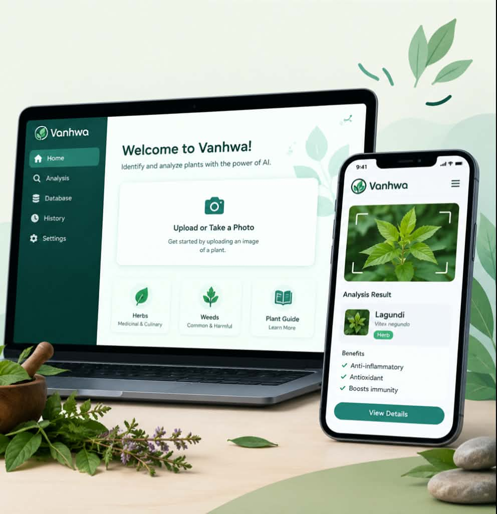

This project reflects my dedication, creativity, and continuous learning throughout my academic journey.

VANHWA is our approved capstone project for our Bachelor of Science in Information Technology program. The project has already been proposed and approved, and our team is now preparing to begin the development of the system.
This project reflects our team's creativity, collaboration, and problem-solving skills. As we move forward with the development, we aim to apply the knowledge and skills we have gained throughout our academic journey while creating a solution that can address a real-world need.